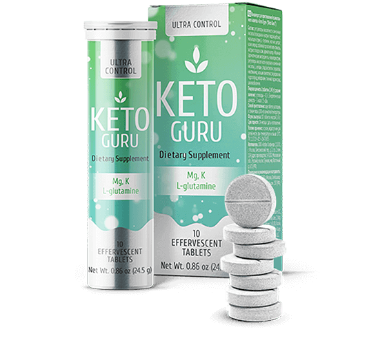

votre régime cétongène


 indispensable de l'alimentation
indispensable de l'alimentation Si le corps cesse de recevoir de l'énergie provenant des glucides, il entre dans un état de cétose après 7 à 10 jours. Il s'agît du jeûne glucidique des cellules qui déclenche la transformation de la graisse sous-cutanée en énergie.
Les corps cétoniques produits dans le foie sont la source principale d'énergie pour le cerveau pendant la cétose. Ils nourrissent le tissu musculaire et préviennent l'apparition de dépôt de graisse.
Comme résultat, les dépôts de graisse disparaissent, et le volume du corps diminue.
complément ALIMENTAIRE KETO GURU
- La quantité de glucides consommés est réduit au minimum
- Le taux de glucose dans le sang diminue
- Pas besoin de produire de l'insuline
- Pas d'insuline - pas de sensation de faim

L'ACTION DE KETO GURU

Normalement, pour provoquer la cétose, il faut de 7 à 10 jours.
Seulement 1 comprimé Keto Guru réduit ce temps jusqu'à 40 à 50 minutes pendant lesquelles le corps produit une quantité suffisante de corps cétoniques et commencera à transformer les graisses en énergie.
Il suffit de dissoudre un comprimé effervescent de KETO GURU dans un verre d'eau et de le boire 30 minutes avant les repas.
Les substances actives de Keto Guru
Vitamine B6 (Pyridoxine)
Participe à la synthèse de l'hémoglobine et active le SIRT génétiquement modifié dans les cellules
Vitamine B3 (Niacine)
Réduit le taux de cholestérol dans le sang. Neutralise les troubles du métabolisme, ce qui réduit l'enflure et contribue à la diminution de
Potassium
Renforce les articulations, est un électrolyte important responsable du fonctionnement de toutes les cellules et de tous les tissus du corps.
L-Glutamine
Dans un état de cétose, une personne se sent fatigué et distrait. La L-Glutamine dynamise, améliore la concentration et favorise une perte de poids sans perte de masse musculaire.
Magnésium
Détend les muscles après l'entraînement, soulage les douleurs articulaires, prévient les spasmes musculaires.
 Important :
Important :
CE QU'EN PENSENT LES EXPERTS A PROPOS DE KETO GURU :
Au cours de la cétose, les graisses se décomposent en acides gras et en glycérine, qui se transforment ensuite en corps cétoniques. Cependant, la cétose n'est déclenchée qu'en cas d'un épuisement complet des réserves en glycogène dans le foie et les tissus musculaires, normalement, le processus prend de 7 à 10 jours.
Pour l'accélérer, soit accélérer la combustion des graisses aussi, je conseille à mes patients le complément alimentaire KETO GURU. Ce produit soutient parfaitement le corps pendant le régime cétogène : il apporte des vitamines, supprime la faim, élimine la fatigue et l'anxiété. Mais l'avantage principal de KETO GURU c'est ce que ce complément bloque l'absorption des glucides, qui se décomposent en glucose (sucre), sont absorbés dans le sang et provoquent un surpoids.
AVANT LE TRAITEMENT : quantité critique de cétones : 0,8 mol

Résultat après le traitement par Keto Guru : Cétones : 13 mol
La jeune femme s’est adressée à moi quand elle pesait 97 kg (son poids record). Avant, elle suivait souvent des régimes, elle ne mangeait rien, mais tout cela ne donnait qu'un résultat à court terme, mais puis elle reprenait les kilos perdus en double. Je lui ai fait passer les tests qui ont révélé un taux extrêmement faible de cétones dans le corps, ce qui a bien été la cause de cet effet yoyo. Je lui ai prescrit de commencer immédiatement la prise de Keto Guru
Le poids dépend directement de la quantité de cétones dans le corps. Plus vous avez de cétones, moins vous pesez.

LE TEMPS EST VENU DE VOUS DÉBARRASSER DES COMPLEXES
UNE SILHOUETTE MINCE : VOS COPINES SERONT JALOUSES, ET LES HOMMES IMPRESSIONNÉS ...


Keto Guru va accélérer le résultat
Commander 

Nous travaillons pour vous 24h sur 24 et 7j sur 7
AVEZ-VOUS DES QUESTIONS ? Nous travaillons pour vous
La préparation convient-elle aux végétariens?
Masquer la réponseDe nombreuses pilules minceur ont une influence sur l'équilibre hormonal. Qu'en est-il de Keto Guru?
Masquer la réponseCombien de temps pouvez-vous suivre un régime keto et prendre Keto Guru?
Masquer la réponsePouvez vous suivre strictement les règles du régime keto ou pouvez-vous simplement prendre un supplément et perdre du poids?
Masquer la réponseCOMMANDE
QUE DISENT LES FEMMES QUI ONT DÉJÀ VU LE RÉSULTAT :